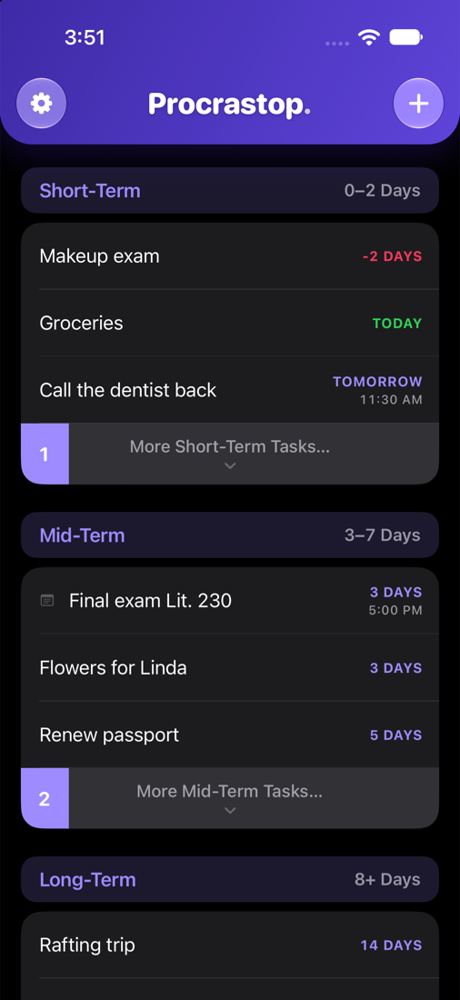
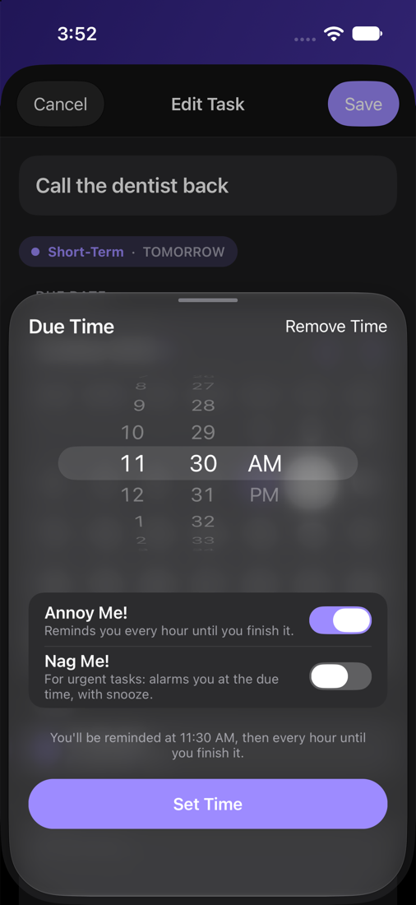
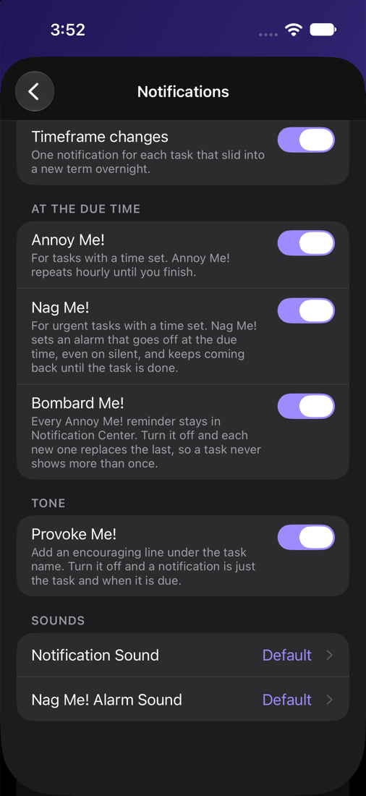

Three timeframes
Short-Term, Mid-Term and Long-Term, split by how many days are left. You can change where the lines fall if the defaults do not match how you think.
iPhone · One-time purchase
Procrastop sorts your tasks by how close they are, then pushes as hard as each one deserves. A quiet reminder for most. For the one you keep avoiding, an alarm that rings through silent mode and comes back every five minutes.
A single $0.99 purchase. No subscription, no account, and your tasks never leave your iPhone.
You did not forget. You decided to deal with it later.
Writing the list takes thirty seconds. The hard part arrives hours later, when the reminder appears, you glance at it, and you swipe it away. Most to-do apps are built for the writing. Procrastop is built for the swiping away.
The idea
There are no projects, tags, priority flags or drag handles. Every task has a due date, and that is the whole filing system. Tasks move themselves from Long-Term to Mid-Term to Short-Term as the date gets closer, so the list reorders itself overnight while you sleep.
Short-Term, Mid-Term and Long-Term, split by how many days are left. You can change where the lines fall if the defaults do not match how you think.
Shows the most urgent few in each timeframe and folds the rest behind More Tasks, so a long list still fits on one screen. Turn it off to see everything.
No reordering, no weekly review, no inbox to triage. Finish a task and it leaves. Miss one and it turns up overdue at the top, where you cannot miss it.
Per task
Not every task deserves the same treatment. Picking up milk is not the tax return. Procrastop lets you set the pressure task by task, and it goes further than most apps are willing to.
Set a time and Procrastop tells you when the task is due. That is all. Most tasks never need more than this.
Comes back every hour until the task is actually done. Turn on Bombard Me! and each reminder stays in Notification Center instead of replacing the last, so the pile grows while you ignore it.
A real alarm, not a notification. It rings through silent mode at the due time, and every button on it buys you exactly five minutes. Stop, snooze, slide: all three bring it straight back. The only way out is finishing the task.
On your iPhone
Native iOS throughout, in light or dark, with the system fonts and controls you already know. Dynamic Type and haptics included.



Details
Press and hold a reminder to mark the task done, or push it an hour down the road. The list updates whether or not the app is running.
A tone for notifications and a separate one for the Nag Me! alarm, so you can tell at a glance which kind of task is shouting at you.
Daily, weekly, monthly or yearly. Finish one and the next occurrence appears on its own, already dated.
Reminders come with a line of encouragement under the task name. If you would rather they stayed strictly factual, switch it off.
No account to make, no server to trust. Everything lives in the app on your iPhone, and there is nothing to sync or leak.
Email yourself a copy of everything as JSON and CSV, whenever you want one. It goes through your own mail app.
How it works
One payment, then it is yours. No subscription, no renewal, and it works offline.
Questions
A notification is easy to dismiss and gone. Nag Me! schedules a system alarm instead, so it sounds at the due time even when your iPhone is on silent, and it keeps a presence on screen until you deal with it. Every action on the alarm gives you five more minutes and then it returns. It stops for good when the task is marked done.
Only if you ask it to. New tasks are quiet by default. Annoy Me! and Nag Me! are switches you turn on for the task that needs them, and both can be turned off globally in Settings.
Neither. There is no sign-in and no server. Your tasks are stored on your iPhone and the app works fully offline.
Yes. Settings has an Export and Backup option that emails you a JSON file and a CSV of everything, using your own mail app.
$0.99 once, on the App Store. There is no subscription and nothing inside the app is locked behind a further payment. Settings does offer optional tips if you want to support the work, but they unlock nothing and the app behaves identically whether or not you ever send one.
Procrastop needs iOS 16.4 or later. The Nag Me! alarm uses a newer system feature and appears only on iPhones running iOS 26 or later, where that feature exists. Everything else works throughout.